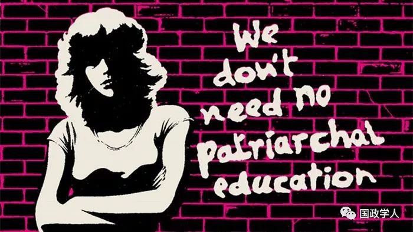
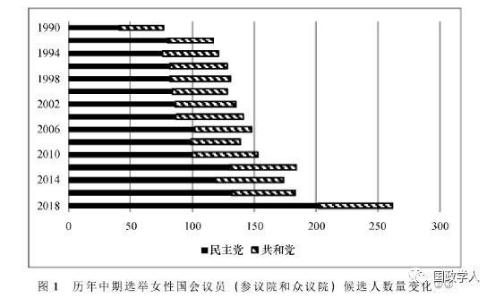
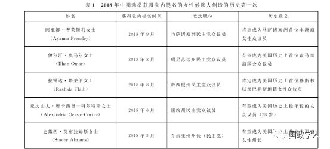
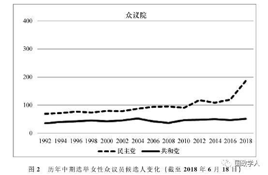
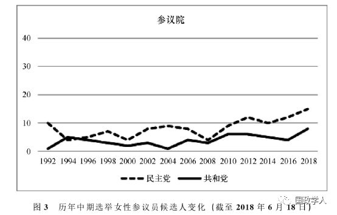
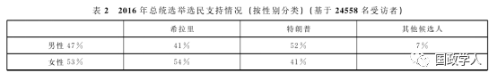
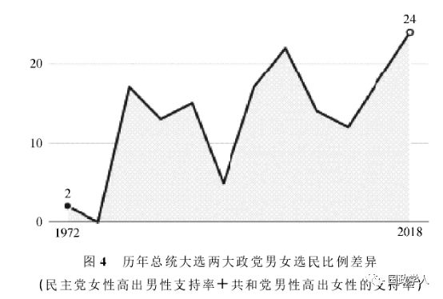
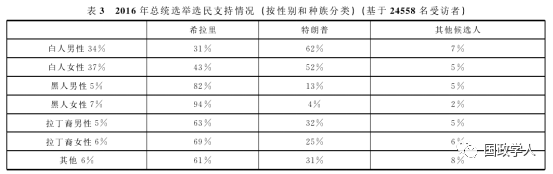
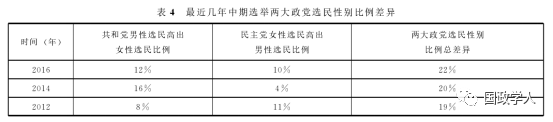

收录于合集

内容简介
[ 作者简介] 高海龙，中国社会科学院大学副教授，中国社会科学院马克思主义学院2018级博士研究生
[ 编辑] 金琳
**** [ 来源] 《中国社会科学院研究生院学报》2019年第１期
内容提要
特朗普当选总统后，美国的妇女运动便进入了一个新阶段。2018年美国妇女以 “去投票站展现力量”为口号，开展 “占领”中期选举的运动，为妇女参选提供帮助。本次中期选举女性候选人表现得异常活跃，不但体现在创纪录的参选人数上，还体现在候选人背景的多样性上，掀起一场 “粉色浪潮”。美国两大政党在女性参政程度上有很大差别。民主党鼓励女性参选，也赢得更多女性选民的支持；而共和党坚持极端保守主义，限制了女性参政议政的积极性。
[ 关键词] 美国中期选举 女性主义 粉色浪潮 选民 性别比例差异

一、美国女性主义运动发展历史和新的高潮
女性主义（ Feminism）又被称为女权主义，是指主要以女性经验为来源，追求男女平等的运动。 一些学者的女性主义概念包含着理论、政治和实践三个层面的意思。从理论层面讲，女性主义强调两性平等和用女性的价值观、学说和方法论来指导实践活动；从政治层面讲，女性主义反映了女性希望能够拥有和男性一样的社会经济地位和政治权利，包括选举权和被选举权；从实践层面上讲，女性主义是一场争取妇女解放的社会运动。
多年来，女性主义及其发展始终是研究者关注的一个重要话题。学者们尝试了从不同的角度探讨女性主义，涉及历史、政治、文学、哲学、法学、艺术和教育等，对女性主义的发展起到了极大的推动作用。现有的文献普遍认为，自美国女性政治觉醒并掀起女权主义运动之日起，美国历史上共出现了三次女性主义浪潮，这与西方其他国家出现女性主义浪潮的时段大体一致。
第 一 次女性主义浪潮产生于１８世纪末，聚焦于女性的投票权。 伴随当时世界范围的废奴运动和殖民地解放运动，女性主义者在倡导天赋人权、自由平等的基础上，提出了妇女参政权、受教育权、就业权等基本的人权问题，主张男女政治上的平等，争取妇女选举权等。 1848年７月19日在纽约州的塞尼卡·福尔斯村，召开了美国历史上第一次以女权主义为主题的妇女代表大会。会议通过了具有深远历史意义的《权利和意见宣言》，列举了美国社会、经济、法律中对妇女的歧视现象，提出了男女权利平等的要求。1920年美国国会通过赋予女性选举权的《第十九条修正案》，标志着美国第一次女性主义运动画上了圆满的句号。
第二次女性主义浪潮产生于 20世纪60年代，聚焦于女性的社会平等权利，也称作女性自由运动，主张是： 要求消除两性差别，要求公共领域对妇女全面开放，改变女性附属地位。其间女性主义分成了两个重要分支——自由派女性主义和激进派女性主义。 二者从开始的相互排斥到后来的相互融合，共同战斗，为女性参政、就业、晋升、教育平等、女性健康、生育、堕胎以及其他诸多涉及女性利益的各种权利（如最低工资、同工同酬、日托所等）而奋斗。
第三次女性主义浪潮开始于美国黑人女作家丽罗贝卡 ·沃克（Rebecca Walker）1991年发表在《女士》（Ｍｓ．）期刊上的文章《成为第三次浪潮》（Becoming the Third Wave）。 ****女性主义者普遍认为，第三次女性主义浪潮是在反女权主义运动 “刺激”下所产生的，是对反女性主义运动的反击，是坚持和捍卫第二次女性主义浪潮成果的保卫战，也是超越第二次女性主义浪潮的新战斗。具体而言，它强调女性问题涉及多种族、多族裔、多宗教信仰、多民族习俗、多元文化、多性取向、多元价值等各种问题；主张跳出原有的女权主义思维框架，呼吁消除社会性别角色差别和偏见等。
一些学者认为，当前的美国正处在第四次女性主义浪潮之中。 ****密西根大学政治学教授迈克尔 ·西内（Michael T. Heaney）认为，这次女性主义新浪潮是2016年美国总统大选之后的产物，开始的标志是2017年进行的妇女大游行。将其看成是女性主义发展新浪潮的一个最重要原因是：规模大，影响深远。
2017年１月，特朗普宣誓担任美国总统的第二天，美国华盛顿、纽约、芝加哥、洛杉矶等多地爆发大规模妇女大游行，上百万名以女性为主体的群众用游行的方式，要求屡屡对女性出言不逊的特朗普尊重女性权利、保护女性权益，要求新政府支持民权、反对歧视和停止族群分裂。一方面，这是希拉里竞选失败后女性选民们的自然反应，另一方面也是对特朗普被指侵犯女性的言论与行为进行抗议。她们除要求政府处理堕胎、同工同酬和性侵犯等女性长期面临的问题外，还将移民权利、警察暴行、大批监禁、选民压制和环境保护等问题包括了进来。很多城市的示威现场中，人们头戴粉红色帽子表示对妇女的支持，“粉色浪潮”这一说法也由此而生，用来形容此次女性运动的声势和规模。其间首次抗议发生于美国华盛顿哥伦比亚特区，这被称作华盛顿妇女大游行（Women’s March on Washington）。
根据丹佛大学和康涅狄格大学搜集的数据，2017年１月２１日的女性大游行在全美600多个城市举行，参加人数超420万。政治学家们认为这是美国历史上规模最大的一次游行。从小镇上的小规模集会到大城市50万人以上的大规模游行，美国每个州都举行了规模不等的女性大游行。此次游行为美国自1964年的反越南战争游行以来境内发生过的最大规模示威活动。在其他国家，也爆发了200多场女性大游行，参加总数超过30.7万人。国际知名的韦氏词典（Merriam- Webster）将“女性主义”（feminism）命名为2017年年度词语，因为它是该词典网站上搜索次数最多的一个词。
迈克尔 ·西内教授认为近期的妇女运动标志着女性运动的一个新浪潮，除了参与者数量众多，代表范围广泛以外，还在于这些妇女运动有巨大的号召力。 ****他对华盛顿妇女大游行运动参与者的调查显示，有３７％的受访者之前从没参加过任何形式的妇女运动。这一数据体现了妇女们对特朗普政府的极度不满。一些女性组织，比如全国女性选民联盟（ National League of Women Voters），过去几年里会员数量不断萎缩，但在妇女大游行运动中重新焕发了生机。 同时 “妇女大游行运动”已经成为一个独立的政治组织，拥有自己的网站、委员会和工作人员。 ****2017 年10月在底特律进行的“妇女大游行运动”全国会议上，确立了提高妇女参与政治运动积极性和能力的目标。除了游行活动以外，妇女们还在各种社交媒体上面发动了新一轮的活动，主要针对过去频频发生的性骚扰事件，比较著名的有“我也是”运动（Me Too）以及“时间到了”运动（Time’s Up）。
二、2018年： 美国政治的“女性年”
2018年１月20日，在特朗普政府执政一周年之际，大批美国女性再次走上街头，呼吁实现男女平等，表达对保障妇女、移民及其他弱势群体权益的支持。此次游行的主题是“去投票站展现力量”（Power to the Polls），组织者希望鼓励女性参政，“占领”中期选举，希望激励更多女性竞选公职、参与投票，使女性权益得到更多体现。正是在这种背景下，登记参与美国国会2018年中期竞选的女性人数创历史新高，并在党内初选环节表现出色，实现了多个历史第一次，掀起了“粉色浪潮”。种种情况显示，美国正处于妇女运动的历史新阶段，是女性主义发展的一个新浪潮。
美国《时代》周刊认为，从2017年的妇女大游行到2018年中期选举，妇女运动高潮不断，可以说是一场革命（Revolution），也可以说是“粉色浪潮”（Pink Waves）。报道这样写道，“从美国参议院和州议会，到地方教育董事会，出现了一股前所未有的潮流，第一次参选的女性候选人正在争取赢得大大小小的议席。”
而BBC则直接将2018年描述成美国政治的“女性年”，因为有创纪录的女性候选人参与中期选举，并不断赢得党内提名。
罗格斯大学美国女性参政中心（the Center for American Women and Politics at Rutgers University）的数据显示，2018年初，登记参加初选的众议员候选人中共有468名女性，超过了2016年统计数据的２倍。年初登记角逐州长席位的共有79名女性候选人，而之前的最高纪录只有34人。
经过近６个月的初选角逐，两大政党竞争国会议员和州长席位的党内候选人逐渐浮出水面。女性候选人取得了令人瞩目的成绩。通过初选顺利获得党内提名的女性候选人不但在数量上超过以往任何一次选举，还创造了多个历史第一。截止到８月中旬，已有11名女性候选人获得党内提名参与州长的竞争（超过历史最高的1994年１名），173名女性候选人获得党内提名参与众议院的选举（超过历史最高的2016年６名）。在西北部的华盛顿州，有两场较量将在４位女性候选人间展开。其中民主党丽莎·布朗（Lisa Brown）同共和党的凯西·麦克莫里斯（Cathy Mcmorris）竞争第５选区的一个众议员席位，而共和党的苏珊·赫亲森（Susan Hutchison）将同民主党现任参议员玛丽亚·坎特维尔（Maria Cantwell）争夺一个参议员席位。除此之外，德克萨斯州的初选中共有50位女性参与竞争，同样创造了历史。图１总结了历年来中期选举女性候选人数量变化情况。

除了候选人数量创历年新高之外，不少女性候选人经过努力，战胜了实力强劲的男性竞争对手，获得党内提名。来自不同种族的妇女在初选中表现尤其出色，创造了多个历史第一次。这其中包括肯定成为马萨诸塞州首位非洲裔女性众议员的阿亚娜·普莱斯利女士（马萨诸塞州民主党众议员候选人），有望成为美国历史上首位索马里裔国会众议员的伊尔汗·奥马尔女士（明尼苏达州民主党众议员候选人），肯定成为美国历史上首位穆斯林女性众议员，同时也是首位巴勒斯坦籍裔女性众议员的拉锡达·塔莱伯女士（密西根州民主党众议员候选人），有望成为美国历史上最年轻的女众议员亚历山大·奥卡西奥—科尔特斯女士（28岁，纽约州第14选区民主党众议员候选人）以及有望成为美国历史上首位非洲裔女性州长的史黛西·艾布拉姆斯女士（乔治亚州州长民主党候选人）。可以确定的是，中期选举结束以后，美国国会将有一些新的不同肤色和背景的面孔。经过整理，我们以表１的形式将此次中期选举中女性实现的历史突破进行总结。
事实上，除了积极参选国会议员以外，更多的妇女通过其他途径参与中期选举。她们为参加选举的女性候选人提供各种帮助，从募集竞选资金到帮助照看女性竞选人的子女。 政治研究中心（ the Center for Responsive Politics）研究显示，越来越多的女性为中期选举捐献大量的资金。 民主党获得的竞选资金中有 62 ％来自女性捐赠者。 ****

三、美国女性参政与政党政治
多年以来，两大政党在女性参政比例上有很大差异。2018年中期选举之前，民主党的女性议员人数就已３倍于共和党的女性议员。2018年中期选举初选中，民主党的女性候选人表现得异常活跃。罗格斯大学美国女性参政中心（the Center for American Women and Politics at Rutgers University ）的数据显示，有多达350名民主党妇女参与国会众议院的竞选，而共和党只有118名。截止到８月中旬，民主党女性候选人已经赢得了105个党内初选，而共和党的女性候选人只赢得了25个。在36个州长位置的竞争中，民主党已经提名了至少８位女性候选人，而共和党只提名了３位。11月中期选举结束以后，民主党的女性议员将很有可能在人数上超过男性议员。而两大政党在性别比例上的差距还将进一步拉大。
事实上，这种差异并不只发生在2018年。通过图２和图３我们可以看出，自1992年开始，历届中期选举竞选国会议员的民主党女性候选人就多于共和党。无论是参议院还是众议院都是如此。同样，这种差异也不只发生在国会，在各个州立法会选举时，共和党参选的女性也要远远少于民主党女性。


除了女性候选人数量上的差异外，女性选民相比男性选民更愿意将选票投给民主党。 而这种男女选民的不同政治党派倾向性形成于1972年的总统选举中，并在最近几次选举中得到放大。2012年总统大选中，民主党候选人奥巴马支持者中的女性比男性多10％，
而共和党候选人罗姆尼（Mitt Romney）的支持者中男性比女性多８％。两大政党的性别差为18％。而2016年的总统大选选民分布中（表２），支持希拉里的选民中女性比男性多13％；而在支持特朗普的选民中男性比女性多11％。24％的性别差是总统选举历史上性别差最悬殊的一次（图４）。


另一方面，通过表３，我们可以发现，在白人选民中，支持希拉里的女性比男性多12％；而支持特朗普的男性比女性多10％；在黑人选民中，支持希拉里的女性比男性多12％，而支持特朗普的男性比女性多9％。与2012年总统选举相比最大差别在于，支持共和党总统候选人的白人男性增加了５％。这种差异在黑人女性选民中差距最悬殊。2016年希拉里获得了94％的黑人女选民支持（2012年奥巴马获得96％），而特朗普只获得了４％。共和党得到更多的白人选民支持，尤其是没有大学学历的白人：男性达到62％，女性达到52％。

2018年８月中期选举初选期间，对参与投票的选民展开的问卷调查结果显示：在全国范围内，支持民主党众议员候选人的女性比男性多15％，而支持共和党众议员候选人的男性比女性多９％。中期选举期间两大政党之间24％的性别差也是历史上最悬殊的一次（表４）。

四、女性参政积极性差异原因分析
（一） 推崇自由民主平等的美国妇女越来越多 ****
2016 年的总统选举中，希拉里和特朗普有着截然不同的竞选主张和执政方针。 希拉里推崇各个种族和性别的人自由平等，而特朗普延续了共和党保守主义的竞选纲领。 ****结果希拉里获得了 54％的女选民的支持，而特朗普只获得了41％ 。 这一结果从某种程度上表明，在目前的美国社会，有更多的女性相信并追求自由、民主和平等，而这同民主党的主张一致。而受到传统观念影响坚持保守主义的妇女越来越少。 2017年和2018年全美范围内开展的妇女大游行运动更激发了妇女的这种对自由、平等、民主的渴望。这在一定程度上解释了为什么民主党在女性选民中为何有更高的支持率。有越来越多的妇女选民支持，就会有越来越多的妇女参与选举成为候选人。因此也就不难理解为什么民主党有更多的女性候选人参加国会议员竞选。
一些学者发现，受过良好教育、有一定政治倾向、同时从事体面工作（如律师）的人有较高的可能去竞选国会议员职位。 而在民主党中，符合上述条件的有一半是妇女；而共和党中这一比例仅为1/4。此外至少一半的现任国会议员都曾在州立法会工作过。目前在各个州立法会工作的议员只有２５％为妇女。其中民主党州议员中36％为妇女，共和党只有17％。波士顿学院政治科学系的戴维·霍普金斯（David Hopkins）接受Five thirty eight网站采访时说，“现在有大学学历的职业妇女大多支持民主党，很少支持共和党；民主党有很多妇女主导的利益组织，比如教师工会等，都为女性参政议政起到推动作用”。
（二） 民主党社会组织鼓励妇女从政 ****
艾米莉名单（ Emily List）是民主党领导下的一个社会组织。它成立于1985年，主要任务是鼓励妇女从事政府部门的工作，并通过培训和资金募集等方式帮助妇女竞选地方和联邦政府的各个层次的职务。艾米莉名单尤其鼓励已成家、有子女的妇女参加竞选，因为她们认为这类妇女常常有家庭的顾虑，一般不愿意从政。但她们有作为母亲教育子女的经历，是现在的政治制度里领导者所缺乏的。艾米莉名单在以往的中期选举时为民主党妇女候选人提供了极大的帮助，在2014年和2016年的中期选举中分别为妇女候选人筹集了4500万美元的资金。现在国会中很多在职的女议员都曾受到过艾米莉名单的资助。2016年总统候选人希拉里也得到了艾米莉名单的资助。
在艾米莉名单之后，共和党也于2010年创立了类似的组织：麦基的名单（Maggie’s List）。麦基的名单作为与民主党的艾米莉名单相对应的组织，其目的是帮助共和党女性参加竞选。但是2014年以及2016年的中期选举她们只募集到21万美元的资金，数额远远低于民主党的艾米莉名单所募集到的资金。显然，这也符合共和党一贯以来不重视女性候选人的特点。乔治华盛顿大学政治系教授米切尔·斯韦尔斯（Michele Swers）认为，民主党的女性赞助者都会强调在中期选举中为女性候选人提供帮助；而共和党女性赞助者没有这方面的主张，她们似乎不在乎女性是否从政或者领导政府。
（三） 共和党中占主导地位的保守观念 ****
**不利于妇女参选长期以来，共和党强调以宗教信仰为行动准则，反对妇女堕胎，反对合法化同性婚姻。 让妇女从政并参与政策的制定一直都不是共和党认可的一种模式。**CNN于2017年17月进行了一次问卷调查。问题为，“如果有更多妇女从政，你认为政府工作会更好还是更坏？”结果显示，被访者中64％的人认为妇女从政会使政府工作更好。如果按照党派来区分的话，民主党中83％的人认为会更好，而共和党只有36％。有21％的共和党人认为妇女从政会使政府工作更差，28％认为没有区别。
哈特维克学院的劳拉·埃尔德（Laurel Elder）对于两个政党女性从政的差异进行了分析和研究，她认为，共和党内的保守主义观念依然很强，成为妇女参政议政的主要障碍。她还指出，这种现象很令人震惊，但也注定了妇女从政的想法不能得到认可。同共和党相反，民主党总尽力促成妇女候选人参选。这同民主党关注教育、健康和男女平等的主张一致。
赛拉丘兹大学（Syracuse University）政治科学系专家丹妮尔·汤姆森（Danielle Thomsen）接受Five thirty eight网站专访时表示，共和党目前形成的极端保守主义氛围非常不利于于温和派的政治人士参选。如果不推行极端保守主义，那女性候选人就很难募集到竞选资金，也很难得到欣赏极端保守主义的选民的支持。这样的竞争氛围使很多温和派的妇女望而却步，因为她们很清楚自己在这种环境下难有作为。汤姆森的研究显示，在各个州议会工作的女议员比男议员有更强烈的平等和民主的倾向。这正好符合民主党的整体主张，因此很多女议员愿意尝试参选国会议员；而共和党截然相反的政治主张束缚了妇女候选人的手脚，同时也抑制了她们的积极性。
（四） 共和党女性议员缺少上升空间 ****
1991 年时共和党共有10名女性担任国会众议员，而现在只有来自佛罗里达的伊莱娜·罗斯·莱蒂宁（Iieana Ros－Lentinen）１人仍然担任议员（10％），其余全都离任。与此形成反差的是，1991年时民主党共有23名女性众议员，现在仍有７名在任（30.4％）。2009年时共和党有21名女性众议员，只有9名留任到现在（42.8％）；2009年时民主党有75名女性议员，现在仍有43名在任（61.3％）。总之，共和党的国会女性议员任期要短于民主党女性议员，这反映出她们缺少上升的空间（比如成为参议员或者党领袖）。在以往11位的共和党国会领袖中，只有１位女性（9.1％）；而在以往１５位民主党国会领袖中，有６位女性（４０％）。
五、结 语
2018年美国妇女以“去投票站展现力量”为口号，发动“占领”中期选举的运动，极大鼓舞了妇女参政议政的积极性。《时代》周刊采访了一些积极参与本次中期选举的妇女，其中包括教师、医生还有公司职员，并且很多人已经有自己的子女。她们大都表示，2016年时自己只是一个普通的选民；2017年她们因为希拉里竞选失败而成为大游行的积极参与者；2018年她们成为中期选举的重要参与者。毫无疑问，中期选举之后美国国会将会迎来一些新的女性面孔。而这些当选的女性议员也会在今后的政治生活中更加关心女性问题，倡导男女平等并致力于推动女性运动不断向前发展。 我们认为，当前的美国正处在第四次女性主义浪潮的高潮阶段，尤其当更多的女性进入政府后必然对国家政策和法律法规的制定产生重要的影响。 有理由相信，此次浪潮还将会持续下去。
虽然女性候选者在2018年中期选举初选中表现出前所未有的激情，也获得了很多胜利，但要影响并改变男性占主导地位的美国政府仍然道路非常遥远。女性的参与度在两大政党之间存在着巨大的差距。一方面是民主党的女性候选人在初选中创造了多个历史第一次，而另一方面共和党的极端保守主义主张扼杀了妇女参政议政的积极性。因此两大政党的这种性别差距在中期选举之后必将进一步拉大。
更多阅读
【地区秩序】阿米塔夫·阿查亚：权力转移还是范式变化？中国崛起与亚洲新兴安全秩序 | 国政学人
国政学人 （ID：guozhengxueren)
为方便学人及时阅读高质量文章
别忘把国政学人设置 星标 哦~